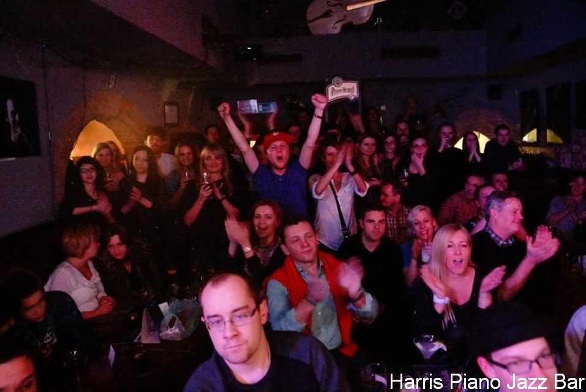

Codziennie muzyka na żywo!
Jazz Blues Funk Soul Hip-Hop…
- Poniedziałek – Piątek
- 13:00 – do ostatniego gościa
- Sobota i niedziela
- 12:00 – do ostatniego gościa
Scena · Rynek Główny 28
Nadchodzące koncerty
Koncerty zaczynamy zwykle o 21:30. Przyjdź wcześniej – najlepsze miejsca znikają szybko.
Od stycznia 1997
O nas
Drugi w Europie i jedyny taki w Polsce klub, w którym codziennie odbywają się koncerty autorskiej muzyki jazzowej.
Marzenie o miejscu z doskonałą muzyką, świetną obsługą, przyjaznymi, niezwykłymi ludźmi i klimatycznym wnętrzem – Harris łączy to wszystko z naturalną lekkością. Rynek Główny 28 na stałe wpisał się w klubowy kalendarz Krakowa.
Gramy szeroko rozumiany jazz – od klasyki, przez wszelkie mieszanki, po progres. Nie zamykamy się na muzykę inną, poszukującą, ale zawsze dobrą. Do tego dobry drink, aromatyczne piwo albo coś mocniejszego.
U nas goście są blisko muzyków – a podczas jam sessions często sami wchodzą na scenę. Jazz, fusion, latin, funk i soul: przynieś instrument albo po prostu słuchaj.

Piano Jazz Bar
Dotknij klawiszy
Zagraj coś po swojemu – albo posłuchaj, jak to robimy wieczorami.
Na naszej scenie
Grali u nas
Art FarmerGary BartzMike SternFred WesleyIdris MuhammadAndy McKee
Michał UrbaniakJarosław ŚmietanaTomasz SzukalskiJan Ptaszyn WróblewskiKrzysztof Ścierański
Adam BałdychKaren EdwardsJorgos SkoliasPiotr SchmidtMarek BałataRoberto Flaming
…i setki muzyków, którzy swoim talentem i energią sprawili, że Harris jest miejscem niezwykłym.
Galeria
Wieczory, których się nie powtarza
Przesuń →
Zarezerwuj stolik
Rezerwacja
12 421 57 41- Rezerwacje – mailowe i telefoniczne – przyjmujemy do godziny 20:00.
- Prosimy o niedokonywanie podwójnych rezerwacji (online i telefonicznie).
- Liczba miejsc jest ograniczona – na specjalne koncerty warto pisać z wyprzedzeniem.
Serce Starego Miasta
Znajdź nas
Harris Piano Jazz Bar Rynek Główny 2831-010 Kraków
- Poniedziałek – Piątek
- 13:00 – do ostatniego gościa
- Sobota i niedziela
- 12:00 – do ostatniego gościa